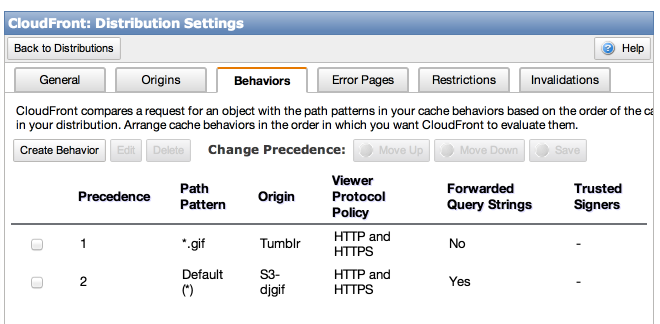

A GIF Odyssey
by
@GlenMaddern
"Odyssey"
"Series-of-dumb-decisions-that-surprisingly-result-in-working-software"
December 2012
@BenSchwarz
VastImg
@RTomayko
vastimg.herokuapp.com/?http://some/file.gif
Full-screen GIFs
are
awesome
vastimg.herokuapp.com
ETOOMUCHPORN
Let's keep it SFW
What has
lots of GIFs
and is
totally safe for work
?
Tumblr
Any particular Tumblr
- • Lots of GIFs
- • Identified SFW/NSFW
GifCity
@BenSchwarz
@GlenMaddern
@ToolmanTim
@NullObject
GifCity
+
Tumblr
=

benschwarz.github.io/gifcity/?t=tumblrs,go,here
mrdiv
simpsonsgifs
skt-na-veia-sempre
But we can do more
What about
synching
to
music
?
GifCity
@BenSchwarz
@GlenMaddern
@ToolmanTim
@NullObject
DJGif
github.com/geelen/djgif
djgif.com (soon)
Two challenges:
- • Change speed of GIFs
- • Find beats from music
<img src="probably_cats.gif">var img = new Image;
img.src = "definitely_cats.gif";Now what?
✖
Why not video?
var video = document.createElement('video');
video.autoPlay = true;
video.loop = true;
video.playbackRate = 1.5;
video.src = 'converted.gif.mp4';
Break GIF into frames?
<div data-frame="0">
<img src="frame0.gif">
<img src="frame1.gif">
<img src="frame2.gif">
</div>
Position/hide them with CSS
[data-frame] img {
opacity: 0;
position: absolute;
}
[data-frame="0"] img:nth-child(1),
[data-frame="1"] img:nth-child(2),
[data-frame="2"] img:nth-child(3) {
opacity: 1;
}
Show them with JS
var animate = function() {
var currentFrame = calculateFrame();
framesElement.dataset.frame = currentFrame;
requestAnimationFrame(animate);
}
animate();
Break GIF into frames:
brew install gifsicle
gifsicle -e cats.gif
# outputs cats.gif.001 cats.gif.002 etc
How can I
break apart a GIF
in the
browser?
github.com/kripken/emscripten
Emscripten:
- • Stubs out the file system
- • Generates a lot of JS
- • Isn't clever about using Browser APIs
Time forJavascript Binary Hax!
What's in a GIF?
http://www.matthewflickinger.com/lab/ whatsinagif/bits_and_bytes.asp

header
frame frame frame
footer
header frame footer
header frame footer
header frame footer
var blob = new Blob(
[ buffer1, buffer2, ... ],
{type: 'mime/type'}
);
img.src = URL.createObjectURL(blob);var header = gifData.slice(0, startOfFrames);
var footer = gifData.slice(-1);
for (var i = 0; i < indices.length; i++) {
var frameData = gifData.slice(
indices[i],
indices[i+1] || endOfFrames);
var blob = new Blob(
[ header, frameData, gifFooter ],
{type: 'image/gif'});
frames.push(URL.createObjectURL(blob));
}
exploder.js
Binary in JS
var xhr = new XMLHttpRequest();
xhr.open('GET', 'cats.gif', true);
xhr.responseType = 'arraybuffer';
xhr.onload = function () {
this.reponse; // BINARY GIF MADNESS
}
xhr.send();
Same Origin Policy
Two options:
CORS on the server
vs
Proxy the content behind a domain you control
Proxying content?
Run your own proxy
vs
Use a CDN for evil
CloudFront
djgif.com/*.gif
=
media.tumblr.com/*.gif
Same Origin Policy
✔
Recap
We can pull down arbitrary GIF data from Tumblr and split it into frames. Now it's time to look at playback.
Playback
var animate = function() {
framesElement.dataset.frame =
calculateFrame( ... );
requestAnimationFrame(animate);
}
animate();
A component!
<x-gif>
github.com/geelen/x-gif
<img src="images/jump.gif">

<x-gif src="images/jump.gif">
<x-gif src="images/jump.gif">
<x-gif src="images/jump.gif" speed="2">
<img src="images/jump.gif">

<img src="images/pulse.gif"
><x-gif src="images/jump.gif" bpm="140">
<x-gif src="images/pulse.gif bpm="140">
<x-gif src="images/jump.gif" hard-bpm="140">
<x-gif src="images/pulse.gif hard-bpm="140">
<x-gif src="images/jump.gif"
<x-gif src="images/jump.gif ping-pong>
<x-gif src="images/jump.gif" n-times="1">
<x-gif src="images/jump.gif n-times="2">
<x-gif src="images/jump.gif" fill>
X-GIF
- ✔ Polymer element
- • Angular directive
- • React component
- • Ember component
github.com/geelen/x-gif
The GIF format the internet deserves
Beat Detection
Options
Do it live
vs
Do it ahead of time
Web Audio API
developer.mozilla.org/
en-US/docs/Web_Audio_API
var audioContext = new AudioContext(),
source = audioContext.createBufferSource(),
analyser = audioContext.createAnalyser(),
speakers = audioContext.destination;
audioContext.decodeAudioData(mp3data, (buffer) => {
source.buffer = buffer;
source.connect(analyser);
analyser.connect(speakers);
})
// Once the music is playing
var frequencyData = new Uint8Array(1024);
analyser.getByteFrequencyData(frequencyData);
frequencyData[19]; // Intensity of ~440Hz
navigator.getUserMedia({audio: true}, (stream) => {
var source = audioContext
.createMediaStreamSource(stream);
source.connect(analyser);
analyser.connect(speakers);
})
@Rumyra
24ways.org/2013/
make-your-browser-dance
var frequencyData = new Uint8Array(1024),
beatDetector = // TODO: this.
// called within a requestAnimationFrame loop
var calculateFrame = function() {
analyser.getByteFrequencyData(frequencyData);
beatDetector.update(frequencyData);
return beatDetector.howFarThroughBeat();
}
✖
Options
Do it live
vs
Do it ahead of time
developer.echonest.com
http://developer.echonest.com/
api/v4/song/search?
api_key=API_KEY&
format=json&
results=1&
artist=weezer&
title=el%20scorcho&
bucket=audio_summary

EchoNest
- • Search ~ 1kb
- • Analysis ~ 300kb
- Both require private API key
NodeJS Micro Service!
app.get('/search', (req, res) => {
var url = searchUrl(req.query.artist, req.query.title)
request.get(url, (err, data) => {
var track = JSON.parse(data.body);
var summary = track.response.songs[0].audio_summary;
request.get(summary.analysis_url, (err, data) => {
var analysis = JSON.parse(data.body);
delete analysis.segments;
delete analysis.tatums;
track.response.songs[0].analysis = analysis;
res.send(200, track);
});
});
});
http://djgif-echonest-proxy.herokuapp.com/
search?artist=weezer&title=el+scorcho- ✔ 55kb
- ✔ No API keys on client
echonest-proxy
Beat data for arbitrary tracks
✔
Two wins:
- ✔ Change speed of GIFs
- ✔ Find beats from music
DJGif
Almost!
Side projects
are not
products
DEMO
<x-gif src="images/explosion.gif" sync>
var xGif = document.querySelector('x-gif'),
beats = metadata.beats, //from Echonest proxy
animationLoop = () => {
// calculate these three:
xGif.clock(beatNr, beatDuration, beatFraction);
};
animationLoop();
DEMO
Final thoughts
Dumb ideas
are